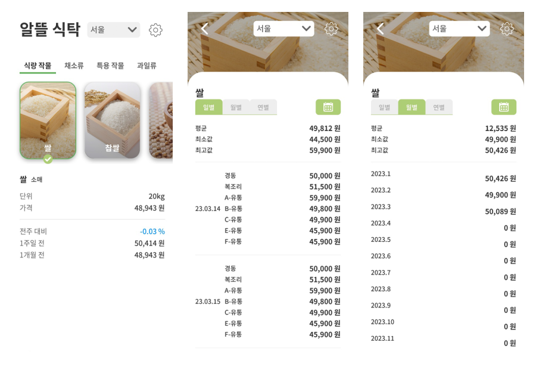
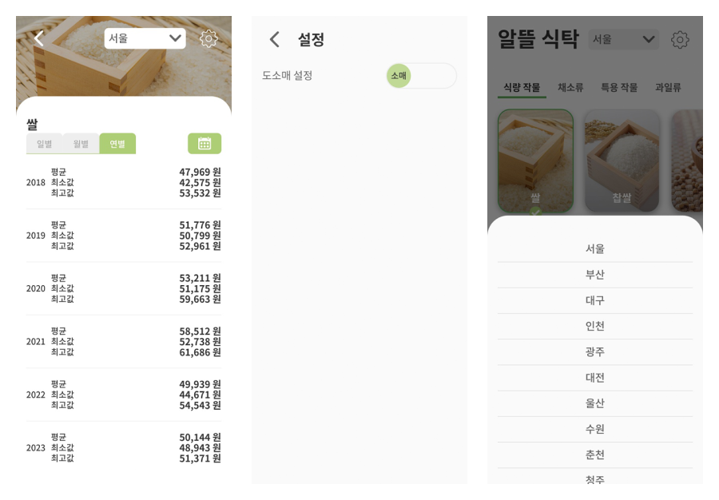
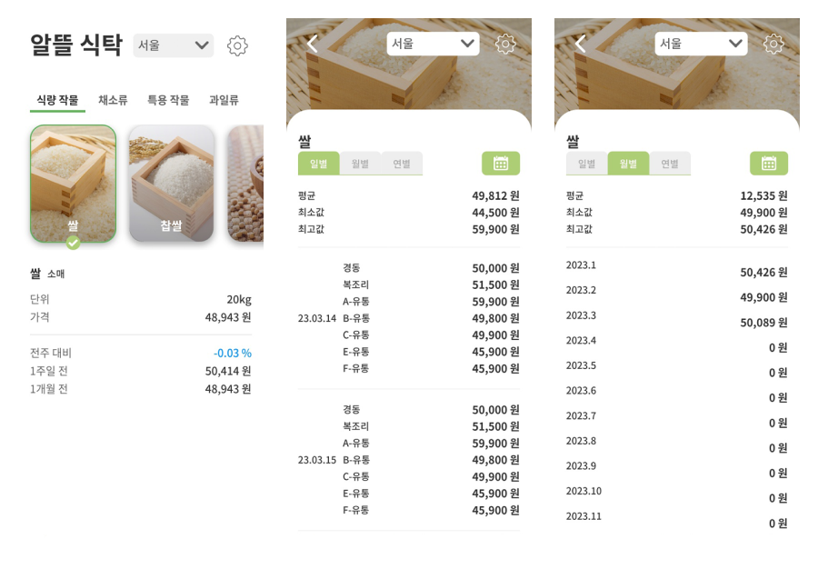
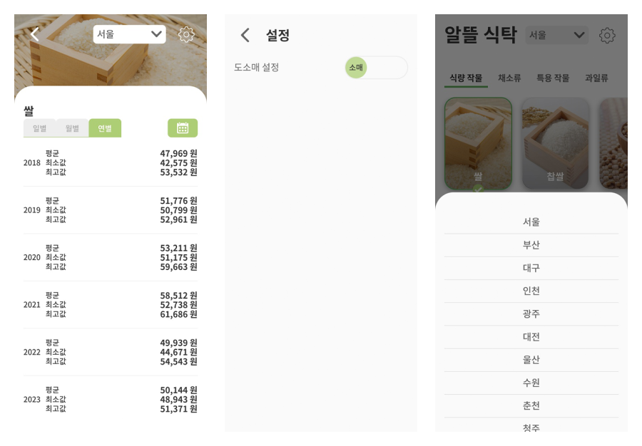

2023년 04월 20일
농산물 시세 조회 애플리케이션
NextJS
typescript
알뜰 식탁
농산물 시세를 제공하는 Open API를 활용하여 개발한 모바일 애플리케이션입니다. 일별, 월별, 연별 시세를 조회할 수 있으며 식량작물, 채소류, 특용작물, 과일류 탭으로 나뉘어 카드형태의 이미지로 쉽게 농산물을 찾을 수 있습니다.
사용한 API
인 앱 화면


농산물 시세를 제공하는 Open API를 활용하여 개발한 모바일 애플리케이션입니다. 일별, 월별, 연별 시세를 조회할 수 있으며 식량작물, 채소류, 특용작물, 과일류 탭으로 나뉘어 카드형태의 이미지로 쉽게 농산물을 찾을 수 있습니다.

